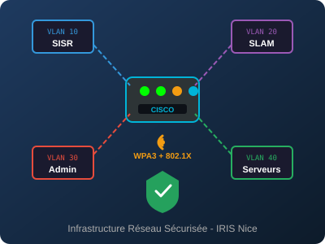
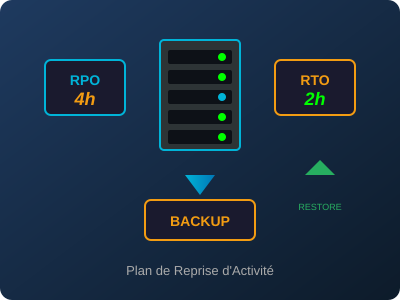
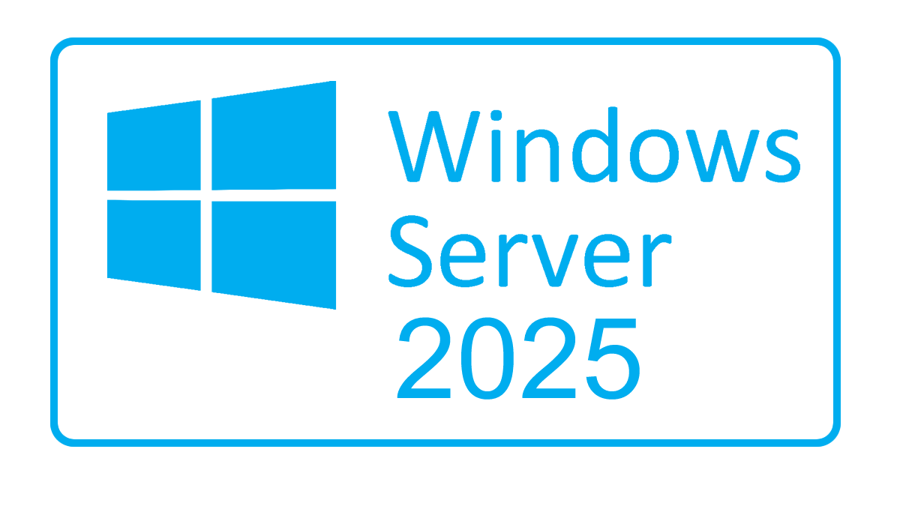
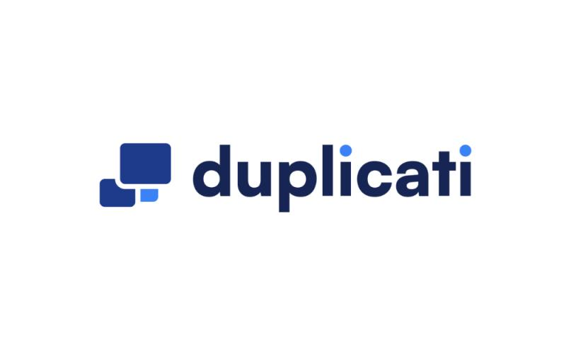
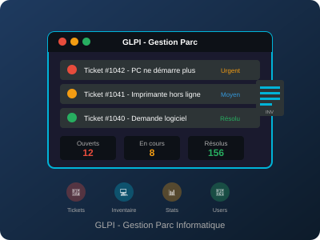
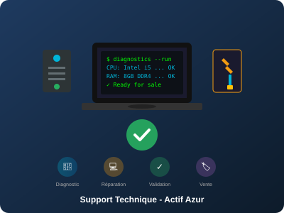

Projets Réalisés
Découvrez mes réalisations concrètes en infrastructure système et réseau

Infrastructure Réseau Sécurisée
Conception et déploiement complet de l'infrastructure réseau du campus IRIS Nice. Projet couvrant la segmentation VLAN (SISR/SLAM/Admin/Serveurs), le routage inter-VLAN avec ACLs sur routeur Cisco 1941W, et la sécurisation Wi-Fi en WPA3-Enterprise avec authentification 802.1X via serveur RADIUS.
- Segmentation VLAN et plan d'adressage IP
- Routage inter-VLAN avec ACLs documentées
- Authentification Wi-Fi nominative (802.1X/RADIUS)
- PV de recette complet avec tests validés

Plan de Reprise d'Activité (PRA)
Conception et rédaction du Plan de Reprise d'Activité pour l'infrastructure critique de l'école IRIS Nice : 15 VMs étudiants, Active Directory, services de supervision et partages de fichiers. Définition des RPO/RTO par service, procédures de reprise pas-à-pas et tests de restauration documentés avec PV.
- Inventaire des actifs par criticité
- PRA complet : scénarios et procédures de reprise
- Tests de restauration VM et AD documentés
- Intégration alertes dans supervision
Classcord server
Réalisation d'un serveur de messagerie interne destiné à un environnement pédagogique. Le projet a couvert le déploiement, la sécurisation, l'automatisation et la documentation du service, avec une attention particulière à la fiabilité et à l'accessibilité en réseau local.
- Approche complète du cycle de déploiement
- Mise en pratique des compétences réseau et sécurité
- Interopérabilité et travail collaboratif

Portfolio professionnel (PF)
Conception et maintenance de mon portfolio BTS SIO avec amélioration continue de la structure, de l'accessibilité et de la traçabilité des travaux réalisés en formation et en stage.
- Documents techniques et procédures de réalisation
- Schémas, captures d'écran et preuves de réalisation
- Suivi des compétences via tableau de synthèse BTS SIO

Windows Server
Mise en place et administration d'un serveur Windows Server pour la gestion d'un réseau d'entreprise. Projet comprenant l'installation d'Active Directory, la configuration des stratégies de groupe (GPO), la gestion des utilisateurs et la sécurisation de l'infrastructure.
- Déploiement d'Active Directory
- Gestion centralisée des utilisateurs et ressources

Système de Sauvegardes
Mise en place d'un système de sauvegardes automatisé sur un serveur Linux. Le projet a impliqué la configuration de scripts rsync pour la synchronisation des données, la planification via cron pour les sauvegardes régulières, et la sécurisation des accès pour protéger les données sensibles.
- Automatisation des sauvegardes avec cron
- Sécurisation et chiffrement des données via Duplicati

GLPI - Gestion du Parc Informatique
Mise en place et administration de GLPI pour la gestion du parc informatique de l'école. Projet couvrant la gestion des tickets d'incidents, l'inventaire automatisé du matériel, et le suivi des demandes utilisateurs avec tableaux de bord de supervision.
- Gestion des tickets incidents (création, suivi, résolution)
- Inventaire automatisé du parc informatique
- Catégorisation et priorisation des demandes
- Reporting et statistiques de support

Stage Actif Azur - Support Technique
Stage de 6 semaines chez Actif Azur, entreprise spécialisée dans le reconditionnement et la revente de matériel informatique. Missions orientées support technique : diagnostic de pannes matérielles sur postes fixes et portables, résolution d'incidents, et préparation des équipements pour la mise en vente.
- Diagnostic et résolution de pannes matérielles (PC fixes/portables)
- Tests de conformité et contrôle qualité avant revente
- Préparation et configuration des équipements
- Gestion des incidents et suivi des interventions
Stage Académie de Nice - Redéploiement d'infrastructure réseau
Participation au redéploiement physique et technique d'une infrastructure réseau : réorganisation des équipements, recâblage, remise en service des postes, vérification de la connectivité et accompagnement des utilisateurs lors du basculement.
- Intervention terrain : brassage, repérage et recâblage
- Reconfiguration réseau et validation technique des accès
- Tests de bon fonctionnement et support de proximité